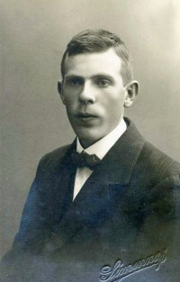

Ingun Kaaresdatter Aanvik
K, #40451, f. 1 mars 1949, d. 8 juni 2010
Familie: Tor Wennevik (f. 31 juli 1943, d. 26 januar 2007)
| Datter | Siri Wennevik |
| Datter | Ida Wennevik |
Biografi
Ingun Kaaresdatter Aanvik ble født den 1 mars 1949 Trondheim, Sør-Trøndelag. Hun giftet seg med
Tor Wennevik. Hun døde den 8 juni 2010.
Ingun Kaaresdatter Aanvik was also known as Ingun Wennevik.
Hun gikk fotolinja i Trondheim 73/74. Hun giftet seg med Tor Wennevik fra Rørvik. Der drev hun i en årrekke studio, og åpnet etter hvert også i Namsos. I 1988 solgte hun studioet i Namsos, og la ned studioet i Rørvik. Samme år tok hun med mann og to døtre til Oslo, der hun åpnet “Fotografmester Wennevik as” på Nordstrand. Etter fem år flyttet hun og mannen Tor studioet ned i Ljabruveien , som var et elegant og veldrevet studio fram til sykdom tvang henne til å selge studioet til Nordstrandsfotografene i 2001.
Ingun ble syk allerede i 35 års alderen. Hun utførte sin fotografiske virksomhet med stor interesse og entusiasme. Ingun har alltid vært kjent som en positiv og blid person. Hennes fotografiske håndverk har vært preget av høy kvalitet. Hennes mann Tor gikk bort i 2007.
Tross sykdommen holdt Ingun fast kontakt med kollegaer, og var medlem i forbund og laug frem til det siste.
En kjær og god kollega, fotograf og håndverker er gått bort. Våre tanker går til hennes nærmeste familie, hennes døtre Siri og Ida og svigersønn Svein.
Vi lyser fred over hennes minne.
Hun ble bisatt den 17 juni 2010 Vestre gravlund, Oslo.
| Sist redigert |
21 juni 2010 00:00:00 |
Trygve Wennevik
M, #40454, f. 19 juli 1911, d. 26 april 1999
Foreldre
Biografi
Trygve Wennevik ble født den 19 juli 1911 Namsos, Nord-Trøndelag. Han giftet seg med
Else Gjertrud Wildhagen. Han giftet seg med
Gerd Hareide. Han døde den 26 april 1999 på/i Namsos, Nord-Trøndelag. Han ble gravlagt den 30 juli 1999 på/i Namsos kirkegård, Namsos, Nord-Trøndelag.
| Sist redigert |
1 mars 2019 00:00:00 |
| Slektskap | 7-menning 1 gang forskjøvet til Håkon Wahl |
Else Gjertrud Wildhagen
K, #40455, f. 10 november 1913, d. 12 juni 1990
Biografi
Else Gjertrud Wildhagen ble født den 10 november 1913 Nittedal, Akershus. Hun giftet seg med
Trygve Wennevik. Hun døde den 12 juni 1990 på/i Nittedal, Akershus.
| Sist redigert |
1 mars 2019 00:00:00 |
Gerd Hareide
K, #40456, f. 1918
Biografi
| Sist redigert |
27 januar 2006 00:00:00 |
Ragna Benjaminsdatter Aune
K, #40457, f. 28 august 1892, d. 25 februar 1942
Foreldre
Biografi
Ragna Benjaminsdatter Aune ble født den 28 august 1892 Aunet 14/3, Aunet; Foldereid, Nærøy, Nord-Trøndelag. Hun giftet seg med
Nils Bernhoff Nilsen Øie den 23 juni 1918. Hun døde den 25 februar 1942 på/i Høylandet, Nord-Trøndelag. Hun ble gravlagt den 7 mars 1942 på/i Høylandet nedre kirkegård, Høylandet, Nord-Trøndelag.
Ragna Benjaminsdatter Aune was also known as Ragna Benjaminsdatter Øie.
| Sist redigert |
16 mai 2017 00:00:00 |
| Slektskap | 7-menning 1 gang forskjøvet til Håkon Wahl |
Nils Bernhoff Nilsen Øie
M, #40458, f. 13 juni 1895, d. 21 februar 1933
Foreldre
Biografi
Nils Bernhoff Nilsen Øie ble født den 13 juni 1895 Høylandet, Nord-Trøndelag. Han giftet seg med
Ragna Benjaminsdatter Aune den 23 juni 1918. Han døde den 21 februar 1933 på/i Høylandet, Nord-Trøndelag. Han ble gravlagt den 4 mars 1933 på/i Høylandet nedre kirkegård, Høylandet, Nord-Trøndelag.
| Sist redigert |
16 mai 2017 00:00:00 |
| Slektskap | 5-menning 2 ganger forskjøvet til Håkon Wahl |
Nils Jørgen Nilsen Kongsmo
M, #40459, f. 11 mars 1869, d. 17 desember 1964
Foreldre
Biografi
Nils Jørgen Nilsen Kongsmo ble født den 11 mars 1869 Foldereid, Nærøy, Nord-Trøndelag. Han giftet seg med
Ellen Bergitte Paulsdatter Øie den 31 desember 1894. Han døde den 17 desember 1964.
Nils Jørgen Nilsen Kongsmo brukte Mastermoen (plass), Øie, Høylandet, Nord-Trøndelag.
| Sist redigert |
24 august 2011 00:00:00 |
Ellen Bergitte Paulsdatter Øie
K, #40460, f. 9 mars 1858, d. 3 desember 1929
Foreldre
Biografi
Ellen Bergitte Paulsdatter Øie ble født den 9 mars 1858 Mastermoen (plass), Øie, Høylandet, Nord-Trøndelag. Hun giftet seg med
Nils Jørgen Nilsen Kongsmo den 31 desember 1894. Hun døde den 3 desember 1929.
| Sist redigert |
24 august 2011 00:00:00 |
| Slektskap | 4-menning 3 ganger forskjøvet til Håkon Wahl |
Anne Sofie Paulsdatter
K, #40461, f. 31 mars 1860
Foreldre
Biografi
Anne Sofie Paulsdatter ble født den 31 mars 1860 Høylandet, Nord-Trøndelag.
| Sist redigert |
24 august 2011 00:00:00 |
| Slektskap | 4-menning 3 ganger forskjøvet til Håkon Wahl |
Aasmund Benjaminsen Aune
M, #40462, f. 11 januar 1906, d. 2 februar 1985
Foreldre
Biografi
Aasmund Benjaminsen Aune ble født den 11 januar 1906 Aunet 14/3, Kongsmoen; Foldereid, Nærøy, Nord-Trøndelag. Han giftet seg med
Mary Synnøve Edvardsdatter Østby i 1935. Han døde den 2 februar 1985 på/i Nord-Trøndelag. Han ble gravlagt på/i Høylandet nedre kirkegård, Høylandet, Nord-Trøndelag.
| Sist redigert |
16 mai 2017 00:00:00 |
| Slektskap | 7-menning 1 gang forskjøvet til Håkon Wahl |
Mary Synnøve Edvardsdatter Østby
K, #40463, f. 23 januar 1908, d. 7 november 1982
Foreldre
Biografi
Mary Synnøve Edvardsdatter Østby ble født den 23 januar 1908 Høylandet, Nord-Trøndelag. Hun giftet seg med
Aasmund Benjaminsen Aune i 1935. Hun døde den 7 november 1982 på/i Høylandet, Nord-Trøndelag. Hun ble gravlagt på/i Høylandet nedre kirkegård, Høylandet, Nord-Trøndelag.
Mary Synnøve Edvardsdatter Østby was also known as Mary Synnøve Edvardsdatter Aune. Hun og
Aasmund Benjaminsen Aune. hadde ingen barn.
| Sist redigert |
16 mai 2017 00:00:00 |
| Slektskap | 4-menning 2 ganger forskjøvet til Håkon Wahl |
Hilma Benjaminsdatter Aune
K, #40464, f. 11 januar 1906, d. 28 april 1990
Foreldre
Biografi
Hilma Benjaminsdatter Aune ble født den 11 januar 1906 Aunet 14/3, Kongsmoen; Foldereid, Nærøy, Nord-Trøndelag. Hun giftet seg med
Fridvald Eilif Wilhelmsen Rian i 1931. Hun døde den 28 april 1990 på/i Høylandet, Nord-Trøndelag. Hun ble gravlagt den 4 mai 1990 på/i Kongsmoen kirkegård, Høylandet, Nord-Trøndelag.
Hilma Benjaminsdatter Aune was also known as Hilma Benjaminsdatter Rian.
| Sist redigert |
17 april 2026 23:37:22 |
| Slektskap | 7-menning 1 gang forskjøvet til Håkon Wahl |
Fridvald Eilif Wilhelmsen Rian
M, #40465, f. 19 april 1900, d. 17 februar 1995
Foreldre

Fridvald Rian
Biografi
Fridvald Eilif Wilhelmsen Rian ble født den 19 april 1900 Vemundvik, Namsos, Nord-Trøndelag. Han giftet seg med
Hilma Benjaminsdatter Aune i 1931. Han døde den 17 februar 1995 på/i Høylandet, Nord-Trøndelag. Han ble gravlagt den 23 februar 1995 på/i Kongsmoen kirkegård, Høylandet, Nord-Trøndelag.
| Sist redigert |
17 april 2026 23:38:00 |
Johan Eldor Øie
M, #40466, f. 30 juni 1922, d. 1 august 1987
Foreldre
Biografi
Johan Eldor Øie ble født den 30 juni 1922 Høylandet, Nord-Trøndelag. Han giftet seg med
Hjørdis Otelie Årsandøy i 1944. Han døde den 1 august 1987. Han ble gravlagt den 7 august 1987 på/i Høylandet nedre kirkegård, Høylandet, Nord-Trøndelag.
Johan Eldor Øie kjøpte i 1948 Nymo 79/14, Rosendal, Høylandet, Nord-Trøndelag.
| Sist redigert |
16 mai 2017 00:00:00 |
| Slektskap | 6-menning 1 gang forskjøvet til Håkon Wahl |
Hjørdis Otelie Årsandøy
K, #40467, f. 26 mars 1924, d. 4 september 2009
Foreldre
Familie: Johan Eldor Øie (f. 30 juni 1922, d. 1 august 1987)
| Datter | Eli Helene Øie |
| Datter | Randi Birgit Øie |
Biografi
Hjørdis Otelie Årsandøy ble født den 26 mars 1924 Bindal, Nordland. Hun giftet seg med
Johan Eldor Øie i 1944. Hun døde den 4 september 2009. Hun ble gravlagt den 11 september 2009 på/i Høylandet kirkegård, Høylandet, Nord-Trøndelag.
Hjørdis Otelie Årsandøy was also known as Hjørdis Otelie Øie. Hun bodde i 2009 på/i Høylandet, Nord-Trøndelag.
| Sist redigert |
7 september 2009 00:00:00 |
Arne Nilsen Øie
M, #40472, f. 9 januar 1920, d. 21 november 1993
Foreldre
Familie: Lully Eriksen (f. 4 juli 1922, d. 26 april 2014)
| Sønn | Brynjar Roar Øie |
| Datter | Norunn Henie Øie |
| Datter | Anne Lise Øie |
Biografi
Arne Nilsen Øie ble født den 9 januar 1920 Høylandet, Nord-Trøndelag. Han giftet seg med
Lully Eriksen. Han døde den 21 november 1993. Han ble gravlagt den 23 november 1993 på/i Oppdal kirkegård, Oppdal, Sør-Trøndelag.
Arne Nilsen Øie bodde i 1951 på/i Oppdal, Sør-Trøndelag.
| Sist redigert |
16 april 2019 00:00:00 |
| Slektskap | 6-menning 1 gang forskjøvet til Håkon Wahl |
Lully Eriksen
K, #40473, f. 4 juli 1922, d. 26 april 2014
Familie: Arne Nilsen Øie (f. 9 januar 1920, d. 21 november 1993)
| Sønn | Brynjar Roar Øie |
| Datter | Norunn Henie Øie |
| Datter | Anne Lise Øie |
Biografi
Lully Eriksen ble født den 4 juli 1922 Kvæfjord, Troms. Hun giftet seg med
Arne Nilsen Øie. Hun døde den 26 april 2014. Hun ble gravlagt på/i Oppdal kirkegård, Oppdal, Sør-Trøndelag.
Lully Eriksen was also known as Lully Øie.
| Sist redigert |
16 april 2019 00:00:00 |
{kind=link}